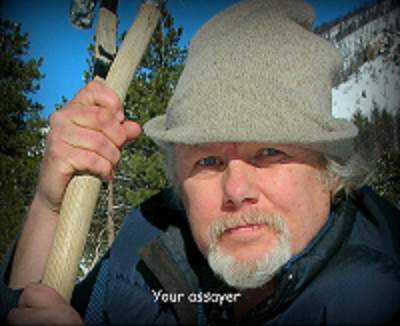

A Little About Me...
I am a one man, old school, operation who can prep and fire about 12-16 samples in a 12 hour day. My business is designed to help the small miner who may not have the minimal number of samples or the budget to work a larger commercial lab. I typically fire up my furnace on Tuesday and Friday. This allows a few days for small orders to accumulate in the lab so they can all be processed at one time to be profitable and make the best use of my time and equipment. However, if you have a lot of samples that need to be run quickly I will work 5 days a week to get your results.
Education and Training
I am Penn State educated but didn't really find my niche until I moved to Colorado to join a fledgling mining company in 1979. I was fortunate to be taken under the wing of 4 old masters who taught me everything they still remembered about geology, mining, milling, fire assaying, AAS, and chemical extraction. Under their guidance, I was allowed to help build a proprietary lab and prefect a technique for processing gold from telluride ores with a 98% recovery rate. I have worked in three commercial labs as an assayer and AA tech since my early days with my mentors, one proprietary lab, and as the in-house assayer for two mining companies.
My Lab
I moved my assay equipment into my own building and offered my services to the general public in 2012. I have done work for about 300 clients from all over the western United States, Canada, Mexico, South America and Liberia and have a lot of satisfied repeat clients, and enjoy meeting and working with the folks in our field.
If I can help you, please don't hesitate to drop an email or give me a call. I answer all inquiries.